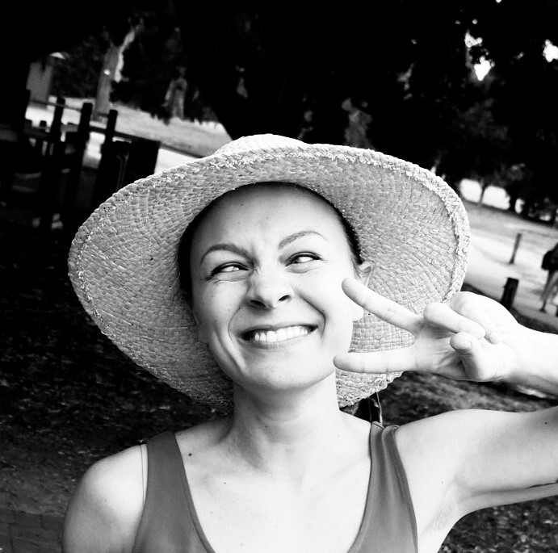
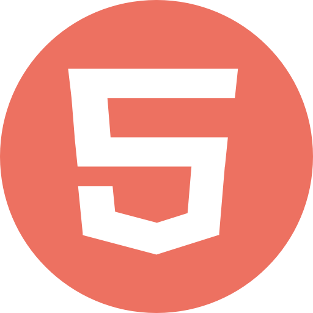

Hi, I'm Dee
I am a Full Stack Developer in the making
I originally hail from Northern Italy, but I have called Australia home for several years now.
After a rewarding career as a Wine Director in some of the finest restaurants in the world, I have recently decided to embark on a new journey and follow my long time interest in Software Development.
I am currently completing a Diploma of IT and I am proud to be part of the 2021 She Codes Plus Brisbane cohort.
I am on the road to becoming a Full Stack Developer - I am excited about combining creativity and critical thinking.
My Stack
